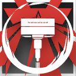

|
|
震慑猛击丨Concussion Crash 附赠动作
消耗 1 技力
 立即
立即 |
重装-不屈者：你擅长一人之力戍守防线，你能在孤立无援的情况下坚持承受伤害和造成打击。
不屈者是重装职业的其中一个职业分支。不屈者干员普遍使用锤类武器（轻锤、硬头锤、钉头锤、战锤、重锤或长链锤）进行战斗，不屈者是战场上的孤高壁垒，以血肉之躯铸成不可逾越的防线。他们放弃团队协防，选择独守要道，在孤立无援中激发超越极限的韧性。
在战斗中，不屈者通常作为队伍中的独立的近战输出力量和承伤位置，在战斗中能够在缺乏队友掩护的情况下独自战斗，他们极高的生存能力允许他们独自面对那些极高威胁的精英或领袖敌人，也允许他们在面对大量普通敌人的围攻时不落下风。
3级：战锤掌握 Warhammer Dominion
作为一名不屈者，你习得下述特性：
战锤掌握。你选择一种锤类武器（轻锤、硬头锤、钉头锤、战锤、重锤或长链锤），然后获得其精通。当你双手持握锤类武器且未着装盾牌时，你的AC获得+1加值。
以战养战。每回合仅一次，当你执行攻击动作并以一次近战武器命中生物并造成伤害时，你能够消耗并投掷一枚生命骰并将骰值加入该攻击的其中一次伤害掷骰中，并恢复等于其骰值的生命值。
3级：不屈体魄 Unyielding Physique
你已习得了孤立作战的真谛，尽管这是一把双刃剑。每次进行先攻检定时，你决定是否要获得下述的所有效果。
复苏。你将一名敌人的生命值降至0时，或者你在战斗中首次陷入浴血时，你可以让自己立刻恢复1d12+你重装等级两倍的已损生命值，或添加等额临时生命值（以此获得的临时生命值在战斗结束后消失）。
此特性一经使用，直到你下次开始回合前不可再次使用。
禁疗。这场战斗中你无法被魔法效应或任何职业特性治疗，除非该治疗来源于你的重装职业特性，或者你为这次治疗消耗了重装生命骰。
7级：震慑猛击 Concussion Crash
你习得如何应对来自敌人的打击并施以回敬。你习得以下特性：
捍卫决心。你每次消耗技力发动重装战技时，每消耗1点技力，你可以恢复1d12+你体质调整值的生命值。如果你发动战技时生命值已满，则可以改为获得等量的临时生命值。这些临时生命值在战斗结束时消失。
此外，你习得战技：震慑猛击。
|
|
震慑猛击丨Concussion Crash 附赠动作
消耗 1 技力
立即 |
10级：坚韧回响 Resilient Echoes
你可以在战场的高压恢复体力并回击敌人。你习得下述特性：
防御反击。当你被一次其他生物的攻击命中时，你可以采取反应，使得受到的伤害下降，数值等同1d12+你熟练加值。此外，作为反应的一部分，那个攻击你的生物也受到1d12+你重装等级的额外伤害。
15级：抗逆钳制 Clamp Defiance
作为阵线最前端的防御者，你对如何压制敌人有深入的理解。你习得下述特性：
强效阻挡。你现在可以擒抱任何体型小于超巨型的生物。
增强钳制。每当一名被你擒抱的敌人对你造成伤害时，该伤害必须减去你的体质调整值。
18级：绝境之握 Grasp of Adversity
你习得下述特性：
锐意。你身边10尺内没有盟友时，你的攻击检定若未受益于优势便不会承受劣势。
此外，你习得战技：绝境之握。
|
 |
绝境之握丨Grasp of Adversity 动作
消耗 2 技力
下回合结束 |